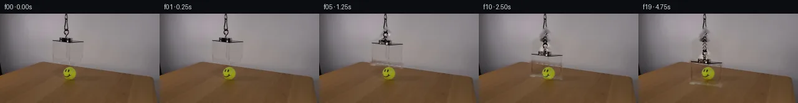

![首帧]()

Round 00
2026-11-05T05:23:28.680147+00:00像素候选变化代码 +182/−0inspection 更新
pixels e8f5ab155e4120e0 · code 6b70c1b191f1e021
查看本轮 generate.py 真实 diff
--- previous/generate.py +++ current/generate.py @@ -0,0 +1,182 @@ +#!/usr/bin/env python3 +"""Generate a 20-frame PixelWorld-Text animation by local RGB compositing.""" + +from pathlib import Path + +import cv2 +import numpy as np +from PIL import Image, ImageDraw + +from artifact_io import save + + +ROOT = Path(__file__).resolve().parent +W, H = 256, 144 +OFFSETS = [0, 0, 0, 1, 2, 4, 7, 10, 14, 18, 22, 25, 28, 31, 33, 34, 35, 34, 34, 34] + + +def line_mask() -> np.ndarray: + """Mask only measured acrylic boundaries/knot, leaving the scene intact.""" + m = np.zeros((H, W), np.uint8) + # Main clear-box face and top-plane boundaries, measured from source gradients. + segments = [ + ((84, 41), (86, 77), 5), + ((133, 43), (132, 80), 5), + ((83, 42), (109, 25), 4), + ((109, 25), (135, 44), 4), + ((84, 42), (134, 45), 4), + ((84, 74), (132, 80), 4), + ((84, 42), (84, 75), 3), + ((134, 44), (134, 78), 3), + # Dense suspension/attachment feature visible around y=39..46. + ((96, 39), (116, 46), 7), + ((108, 39), (134, 45), 5), + ] + for a, b, thickness in segments: + cv2.line(m, a, b, 255, thickness, cv2.LINE_AA) + # Slight dilation covers antialiased boundary fringes without erasing the + # transparent interior or nearby table texture. + return cv2.dilate(m, np.ones((3, 3), np.uint8), iterations=1) + + +def reconstruct_background(src: np.ndarray, mask: np.ndarray) -> np.ndarray: + """Remove original acrylic boundary strokes using local RGB inpainting.""" + clean = cv2.inpaint(src, mask, 4, cv2.INPAINT_TELEA) + # Telea can add single-pixel chroma excursions. Clamp reconstructed pixels + # to a generous local envelope so the muted wall/table remains photographic. + med = cv2.medianBlur(src, 9).astype(np.int16) + c = clean.astype(np.int16) + c = np.where(mask[..., None] > 0, np.clip(c, med - 40, med + 40), c) + return np.clip(c, 0, 255).astype(np.uint8) + + +def cord_residual(src: np.ndarray) -> np.ndarray: + """Extract the dark woven cord signal without copying a rectangular wall strip.""" + residual = np.zeros((38, 13, 3), np.float32) + for y in range(38): + left = src[y, 97].astype(np.float32) + right = src[y, 115].astype(np.float32) + for j, x in enumerate(range(100, 113)): + f = (x - 97) / 18.0 + background = left * (1.0 - f) + right * f + residual[y, j] = src[y, x].astype(np.float32) - background + # Dark deviations belong to the cord; suppress unrelated bright wall noise. + luma = residual.mean(axis=2) + alpha = np.clip((-luma - 4.0) / 34.0, 0.0, 1.0)[..., None] + return residual * alpha + + +def extend_cord(frame: np.ndarray, texture: np.ndarray, end_y: int) -> np.ndarray: + """Continue the measured cord downward as the suspended box lowers.""" + out = frame.astype(np.float32) + for y in range(37, min(end_y + 1, H)): + # Offset repeated texture rows to avoid a conspicuous vertical repeat. + row = texture[(y * 7 + (y // 11) * 5) % len(texture)] + for j, x in enumerate(range(100, 113)): + # Soft narrow profile and a restrained warm-orange highlight. The + # source cord is extremely dark, so warmth remains deliberately low. + profile = max(0.0, 1.0 - abs(x - 106.0) / 7.0) + warm = np.array([5.0, 1.5, -1.0], np.float32) * profile + out[y, x] += row[j] * profile + warm + return np.clip(out, 0, 255).astype(np.uint8) + + +def translate_residual(residual: np.ndarray, dy: int) -> np.ndarray: + shifted = np.zeros_like(residual) + if dy >= 0: + shifted[dy:] = residual[: H - dy] … diff truncated; 95 more lines …